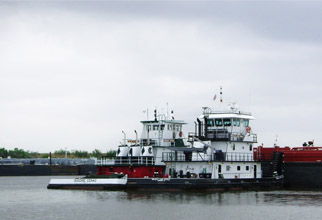

OverviewLipow Oil Associates, LLC is a consulting firm based in Houston, Texas that was established in 2004. We specialize in providing information and analysis of market trends to petroleum refiners, terminal operators, petroleum product traders and hedge funds used in formulating investment strategies. Our capabilities range from phone consultations of as little as one hour to custom projects meeting client requirements. |
|
AboutConsultants can be utilized in many different ways in the Petroleum Industry. A diverse range of projects ranging from supply/demand issues to the effects of changing environmental regulations offer clients, seeking a different perspective, an opportunity to employ a consultant. Our goal at Lipow Oil Associates is to take advantage of over three decades of hands-on refining and trading experience and apply that to problems that our clients face. |
 |